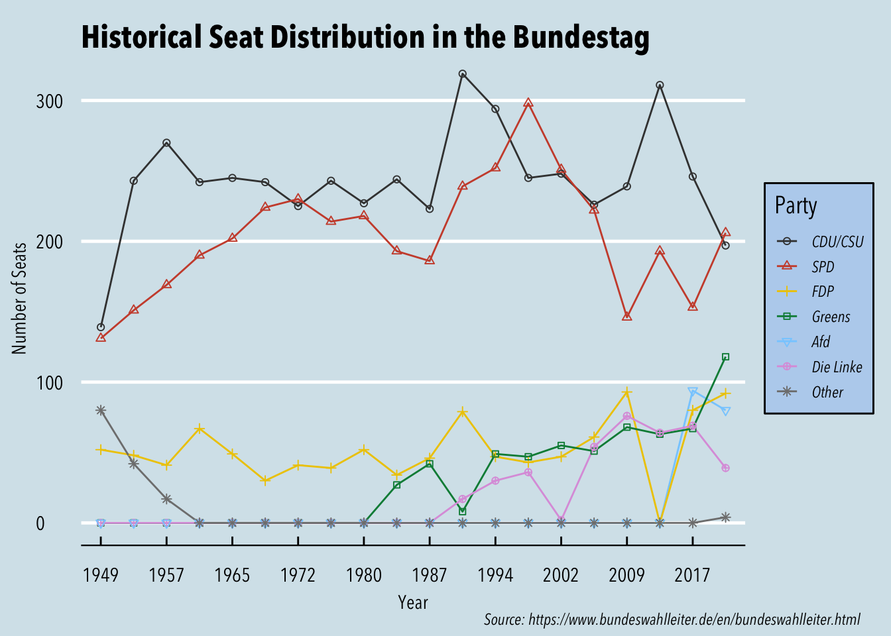

Visualizing Trends in the Bundestag
Data
The data used was compiled from Germany’s Federal Returning Officer’s website, Der Bundeswhalleiter. Globally, the data has the seat count each party received in every election since 1949 up until the latest election as of June 2022. For the visualizations I use two datasets using the same data in slightly different formats. bundestag_party_seats is made up of an election year variable and one variable for each party which denotes the seat count in any given election. This dataset is a pivoted version of bundestag_election_seats which has one variable for party and one variable for each election year (it also includes some descriptive variables for the parties but these are not as relevant).
Visualizations
Party Seat Distribution in the Bundestag since 1949

While this is not necessarily the fanciest line graph, it conveys quite well the general trends seen in the support for German parties. If we examine the trends chronologically, we can see the decline of the German right wing populist movement during the 50’s: the number of CDU/CSU seats skyrockets, and this change seems to be primarily associated with the decrease in the seats of the ‘Other’ parties category (composed then of mostly of small right wing nationalist parties at the time). Until the 80s, the distribution in the Bundestag stays relatively stable. As the Greens and Die Linke (left-leaning and left parties) enter the parliament, the main center-left party SPD’s seats don’t seem to fall; in fact they rise, indicating a growth in support for left leaning politics (Perhaps an obvious development considering these changes took place after the German unification). After the 2000s, though, we see the Greens and Die Linke continue to grow progressively, eroding the SPD’s share of seats. Additionally, we see the CDU/CSU retake its dominance (i.e., the Merkel years), but most significantly to German politics, and even European politics, we see the resurgence of right wing nationalist movements as AfD enters the Bundestag in 2017. Since the AfD gained seats in the national parliament, CDU/CSU seats have fallen, so we could infer that AfD benefited from taking some of CSU’s voters.
Composition of the Bundestag: Current vs Historical
The first graph shows the composition of the Bundestag after the 2021 election, and the second one, shows what the composition of the Bundestag looks like based on the average number of seats each party has had since the 1949. I think these graphs are not necessarily the most informative, since, for example, we cannot tell what the actual number of seats each party has, and we could use other simpler graphs to convey the information. However, I found this geom a little while ago and I personally think it looks really cool and wanted to show it. Moreover, by putting together the graph for the 2021 election and the seat averages, I think the viewer is able to get a general sense of which parties have dominated parliament and which parties have recently gained more support - specifically, we can see the CDU/CSU and SPD have dominated historically and other center as well as more radical parties have appeared in recent years. Ultimately, this is not the most sound graph, but I think it is visually appealing and I guess we don’t always need to convey life changing insights in a graph. (I should add I am a bit of a politics geek so perhaps these graphs are not as interesting to others, but I digress)
Source
Data retrieved from Germany’s Federal Returning Officer’s website - Bundeswahlleiter.